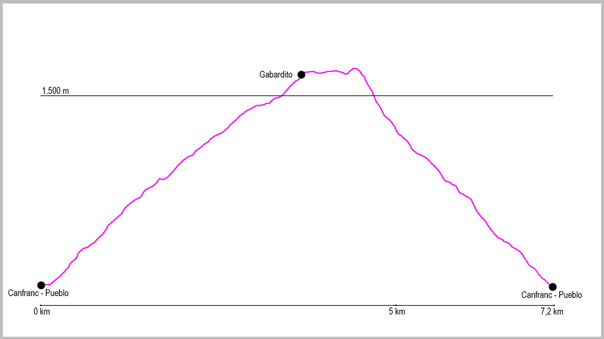

Nuestro recorrido comienza al borde de la carretera N-330 en Canfranc-Pueblo, justo en la parada de autobús en dirección Astún-Jaca. En este punto cogeremos un camino que parte desde una rampa sobre un muro de hormigón que nos conducirá por el barranco de Los Meses.
El inicio del camino es muy cómodo. El sendero asciende primero por el vivero de Los Meses para después cruzar por un dique el barranco y dejarnos desde ese momento en su margen derecha. La subida, muy tendida en todo momento, nos llevará a la fuente la Pajeta, para poco después dejarnos en la pista que nos conducirá al punto de retorno. Cuando llegamos a ella, tenemos que girar a nuestra derecha, ascendiendo desde este momento por la pista forestal hasta Gabardito. A mitad de este tramo de subida encontraremos la fuente de Los Abetazos, lugar donde podemos tomar agua.
Una vez llegamos a la pradera de Gabardito, pasaremos por debajo de un enorme árbol y en ese momento seguiremos las marcas de GR (blancas y rojas) hasta llegar al refugio forestal de Gabardito. Justo aquí, continuaremos un poco más la subida para llegar a un punto donde la GR11 gira a nuestra derecha. Este es el punto donde nosotros giraremos a la izquierda para continuar una primera parte por campas y rosales silvestres nuestra ruta.
Tras unos 300 metros donde el camino no está muy claro, llegaremos a una zona de bosque donde lo podremos seguir sin dificultad. El camino mantiene altura durante un buen rato antes de llegar a una antigua acequia, donde la atravesaremos y rodearemos una zona llana con una gran roca a nuestra derecha.
Pasados este punto comienza nuestro descenso hasta el punto de inicio. Toda la bajada transcurre por un cómodo sendero que nos conducirá hasta el punto donde salimos en nuestra ascensión a la pista. Al llegar a ella giraremos a nuestra izquierda para apenas 10 metros después volver a girar a nuestra derecha y en este punto coger el camino que tras pasar de nuevo la fuente la Pajeta y el vivero de Los Meses nos llevará al punto de partida.
